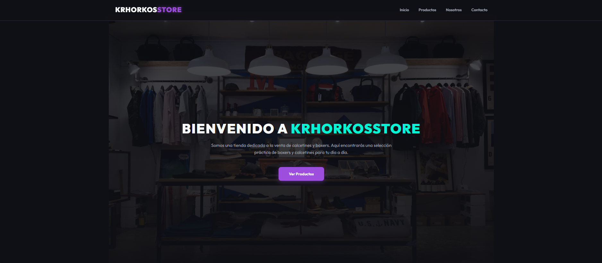
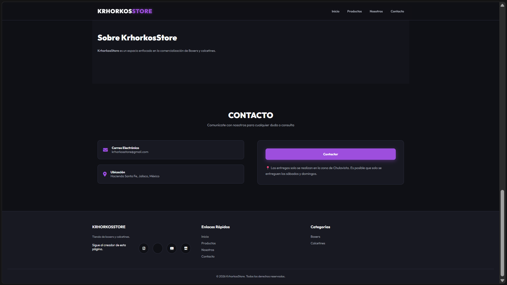

Volver al Inicio
Ver Catálogo y Precios
Portafolio de Trabajos
Sitios Web — todos creados por mí
Ejemplos de sitios web básicos
Ejemplos de sitios web estándar
Sitio web de Boxer y Calcetines


URL del sitio:
https://krhorkos3dstudioand2d.github.io/KrhorkosStore/index.html